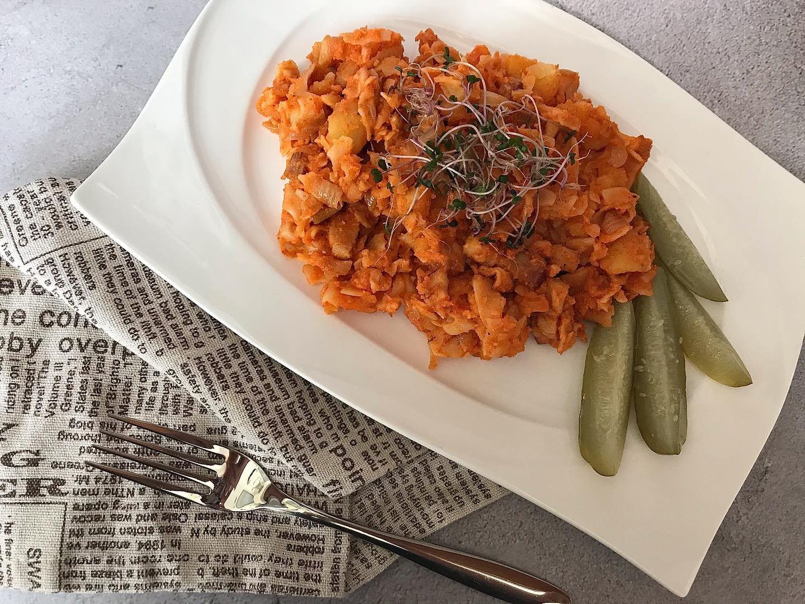

Grenadír podľa @cili_papricka_v_kuchyni — Normy Jedál
Granatiersky pochod...bud ho milujete, alebo nenavidite. A mozno vam ho len znechutila skolska jedalen. Ja ho mam rada... s kopou dusenej cibulky 🧅 Ten dnesny je aj so slaninkou, aby ho nezavrhol manzel 😅 #granatierskypochod #granadir #granadirskypochod #granatierskymars #grenatir #grenadir #granadyrmars